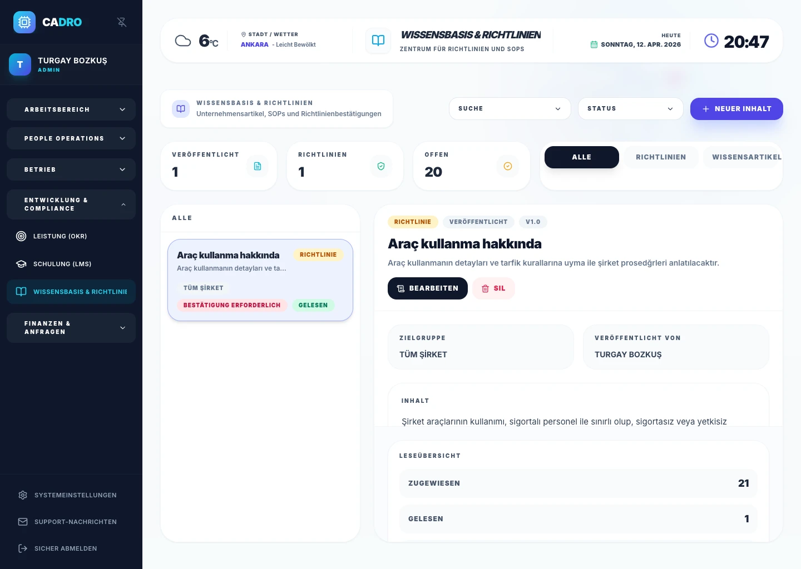
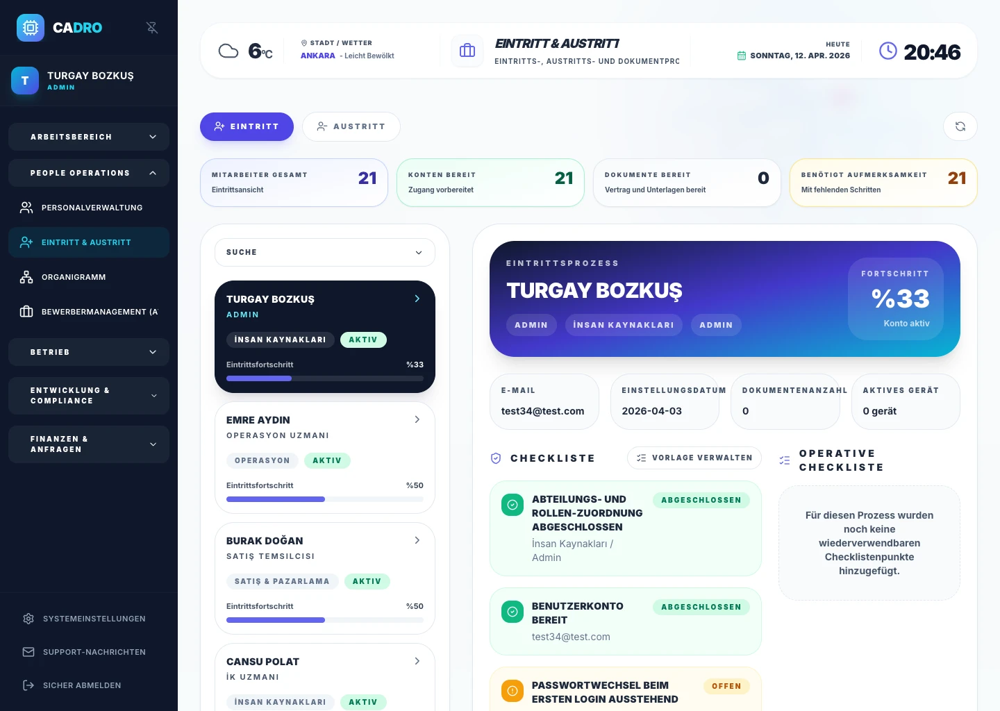

Versioniertes Richtlinienmanagement
Verfolgen Sie jede Aktualisierung von Richtlinien oder SOPs versioniert, archivieren Sie ältere Versionen und starten Sie neue Lesebestätigungen.

WISSENSDATENBANK & ONBOARDING
Mit CADRO veröffentlichen Sie Unternehmensrichtlinien versioniert, verfolgen, wer sie gelesen und bestätigt hat, und machen Onboarding zu einem standardisierten Workflow.

Zentrale Richtlinienverteilung und Onboarding-Aufgaben reduzieren manuelle Koordination und verbessern die Mitarbeitererfahrung.
Zielgruppen nach Rolle, Abteilung und Mitarbeitenden stellen sicher, dass Dokumente die richtige Zielgruppe in der richtigen Version erreichen.
Wissensdatenbank, Lesebestätigungen, Versionshistorie und Onboarding-Aufgaben arbeiten in einem Workflow zusammen.
MODUL-FUNKTIONEN
Verfolgen Sie jede Aktualisierung von Richtlinien oder SOPs versioniert, archivieren Sie ältere Versionen und starten Sie neue Lesebestätigungen.
Sehen Sie, wer welches Dokument gelesen hat und welche Mitarbeitenden noch handeln müssen.
Standardisieren Sie Aufgaben für den ersten Tag, die erste Woche und den ersten Monat nach Abteilung oder Rolle.
RICHTLINIENBESTÄTIGUNG
Inhalte nach Unternehmen, Rolle, Abteilung oder einzelnem Mitarbeitenden ausrichten und verteiltes Teilen durch strukturierte Distribution ersetzen.
Compliance entdecken →
ONBOARDING-ORCHESTRIERUNG
Standardisieren Sie Onboarding-Aufgaben über HR, IT und Operations für ein schnelleres und messbareres Ersterlebnis.
Sicherheit entdecken →
FAQ
Ja. Jede Version kann eine bestimmte Zielgruppe ansprechen, ältere Versionen werden archiviert, und für aktualisierte Versionen kann ein neuer Lesebestätigungsablauf gestartet werden.
Ja. HR-, IT-, Operations- und Manager-Aufgaben können als Vorlagen angelegt und automatisch ausgelöst werden, wenn ein neuer Mitarbeitender erstellt wird.
BEREIT?